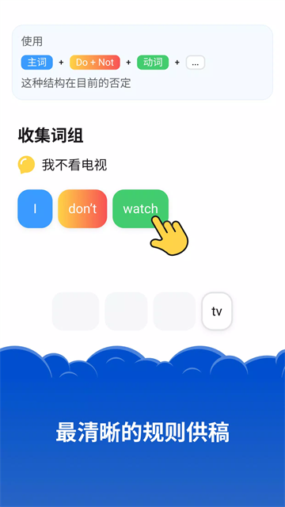
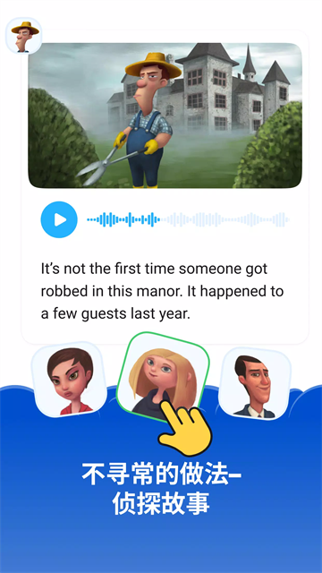

用了 Simpler 八个月，我来说说哪些功能真的留得住人
从 Level 1 爬到 Level 6，八个月里每天十几分钟的坚持让我对这款英语学习应用有了一些超出上手阶段的真实感受。
装 Simpler 到现在刚好八个月。最初的动机很朴素——工作里偶尔要写英文邮件、看英文文档，但总觉得自己的英语水平卡在"能看懂但不敢写"的尴尬位置。试过背单词 APP，背完忘；试过 YouTube 跟着视频学，三分钟热度；朋友甩给我一个下载链接让我试试时，我其实没抱太大期望，毕竟市面上不缺"让你每天学英语"的产品。
但八个月下来，我从 Level 1 爬到了 Level 6，中间断过的天数加起来可能不超过一周。这套东西能让我坚持这么久，肯定有它的道理——但也不是每个功能都让我满意，有些当初以为会离不开的模块，现在碰都没再碰。
越用越顺手的：词块拼句，把"知道语法"变成"会用语法"
Simpler 最核心的玩法是词块拼句——把乱序的彩色词块拖到句子栏里，拼对了自动过、拼错了不让进。我一开始觉得这太简单了，不就是排列组合吗？
但真正用起来才发现，它解决的是一个我多年没解决的老问题：我知道语法规则，但让我自己组句子的时候，我还是会犹豫"这个动词要不要加 s"、"时间状语放句首还是句末"。
传统英语课会一次性把一般现在时否定句的所有细节给你列出来：主语 + don't/doesn't + 动词原形 + 其他，第三人称单数用 doesn't 不用 don't，时间状语通常放句末……信息密度大到你听完也记不住。Simpler 的做法完全反过来——它只给你骨架，然后让你亲手拼。拼 "I don't watch TV" 没问题，下一题换成 "He doesn't play football"，你第一次放 don't 系统不让过，自然就懂了主语变了否定词也要跟着变。再下一题加入时间状语 "every day"，你拼错位置系统还是不让过，试两次就知道时间状语放句尾。
这个过程我一开始觉得"浪费时间"——明明老师一句话就能说清楚的事，为什么要让我错两次？但拼了几十道题之后我发现，我真的记住了。不是靠死记硬背公式，是靠"我拼错了，所以我知道这里为什么不能这么放"。这种记忆的牢固程度，和背十遍语法书是不一样的。

越用越烦的：对话练习的语音识别
2024 年底版本更新后，对话练习模块被大幅强化了——两位母语者模拟日常场景，咖啡馆点单、机场值机、超市购物，听完对话之后轮到你开口回答。这个设计听起来很美，但实际用下来我有一个挥之不去的吐槽：语音识别的准确度很玄学。
开发者说"识别更准"，但我的体验是它本质上还是辅助性质的。你回答得大意正确、发音基本准确就算过——这个"基本准确"的阈值到底在哪里，没人说得清。有几次我自认发音没问题，系统判定不过；也有几次我含含糊糊嘟囔了几句，居然过了。这种不确定性让人很不爽——你不知道该怎么改进，因为过不过不完全取决于你说得好不好。
对话内容本身是和我当前级别绑定的，这一点做得不错——我学了现在进行时，对话里就会出现 "I'm ordering a latte"，不会冒出我还没学过的虚拟语气。但语音识别这块，我现在基本都是"跳过语音，只做文字选择"——应用允许这么做，而我觉得省下来的时间可以去多拼几道词块题。
哪个功能成了每天离不开的：侦探故事
我没预料到会是这个。Simpler 里有一个"侦探故事"模块，让你通过拼凑句子来推进剧情、破案。Level 3 的故事是庄园抢劫案，庄园主人说自己案发时在睡觉，管家说看到客人半夜离开，目击者说小偷从窗户跑了——每推进一步，你都要拼对含有当前级别正在学的词汇的句子。
好在哪？它给了我一个"假装自己在用英语解决实际问题"的场景。学英语最难的一步是从"我认识这个词"到"我敢用这个词"，侦探故事就是在这一步搭了个桥。我拼对 "I claim that I was asleep" 不是为了"通过一个关卡"，是为了搞清楚谁在撒谎；我拼对 "The witness saw the guest leave" 不是为了"掌握宾语从句"，是为了破案。这种目标感让我比做普通拼句题投入得多。
而且它的台词不是瞎写的——我后来去Simpler文档翻了一下才确认，Goodvyzn 团队是先看这一级别要教哪些词汇和语法，再写故事。所以每一个角色的每一句台词，都是我正在学的东西的自然运用。故事里偶尔出现一两个还没学过的词，会有特殊标注，点一下弹小卡片解释，但这种情况很少——他们的设计原则是"故事里不出现你没见过的东西"。

哪些功能我碰都没再碰：跟读打分和等级证书
跟读打分功能是对话模块里的另一个分支——播放一段母语者的音频，然后你跟着读，系统给你打分。跟读分数不影响课程进度，纯粹是自我检验。我试过几次，分数忽高忽低，而且不知道怎么提高，就放弃了。不是功能做不好，是对我来说没有驱动力——反正不计入进度，我为什么要花精力在一个没有明确反馈的东西上？
等级证书也是同理。开发者说"修完级别还能领取等级证书"，但这个证书只有 Simpler 内部认，不能当任何外部凭证。我 Level 3 修完的时候确实领了一张，但领完就存进相册再也没打开过。对自学者来说，真正有说服力的证书还是那些通用的（比如雅思、托福），Simpler 的内部证书更像是一个仪式感——有了会开心一下，但没有也不会觉得少了什么。
观感修正：当初高估了什么，低估了什么
刚开始用的时候我觉得，Simpler 最核心的竞争力是"每天十几分钟就能学会英语"——这个定位对上班族太友好了，不需要大块时间，碎片时间就能搞定。但八个月下来我发现，"每天十几分钟"其实是个骗局——不是说它每天只让你学十几分钟，而是说，如果你真想有进步，十几分钟是远远不够的。我自己从 Level 1 到 Level 6，每天实际花的时间大概在 30 到 40 分钟，包括主线课程、侦探故事和偶尔的对话练习。十几分钟可能只够做两三轮拼句。
反过来，我一开始低估了词块拼句的价值。我以为这是个幼稚的小游戏，骗小孩的。但八个月之后回头看，真正让我能写出完整英文句子的，不是那些视频课、不是那些背单词 APP，就是这堆彩色词块。我现在写邮件的时候，脑子里不会先蹦出语法公式——而是自动在脑子里拼词块：主语是什么，动词用不用变形，时间状语放哪里。这就是用熟了之后的肌肉记忆。
去留结论：我还会继续用，但有两个信号让我会考虑换
第一个信号是等级上限到了还不更新。Simpler 的内容定位是"从零基础到初中级"——我现在 Level 6，听说后面还有几个 Level，但如果我爬到顶了而官方迟迟不更新更高难度的内容，那它就完成了它的使命，我会去找能带我从初中级进中级的东西。
第二个信号是对话练习的语音识别没有实质性改进。我知道 Goodvyzn 在迭代，但如果下次更新之后还是"含含糊糊就能过、好好说反而不过"，那我可能会去找专门练口语的应用搭配使用——毕竟 Simpler 的强项是阅读和语法，口语这块它可能真的不是最优解。
除此之外，没有什么让我想卸载的理由。每天打开、拼几十道题、刷一两个侦探故事、偶尔做一轮对话文字选择——这套节奏我已经习惯了，习惯到有时候想不起来"我在学英语"这件事，只是觉得"今天还没拼句子"而已。能让一个拖延症患者坚持八个月的东西，值得一个好评。对了，这款应用的相关资料我在GitHub、Gitee 和 GitCode 三个仓库都同步了一份，国内网络不太稳定的时候换个镜像访问就行。